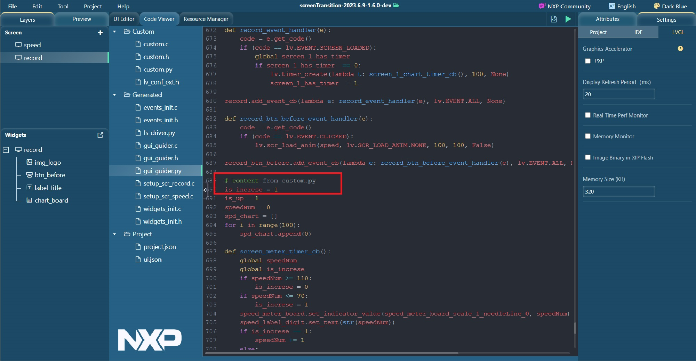

tutoeials
experience_with_micropython_in_gui_guider
add_custom_code
as_custompy
As custom.py
Put the custom.py file into the folder
<GUI-Guider-Project-name>/custom/
. The content appears merged into the
final gui_guilder.py
file, replacing the tab with four spaces.
Figure:
Content appears merged into the final gui_guilder.py file
